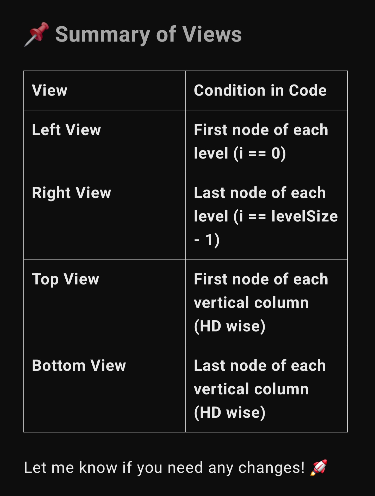

Trees [Top G]
DSA Quick Revision
Max Path Sum
class Solution{ //DSAQuickRevision /* Recursive function to find the maximum path sum for a given subtree rooted at 'root' The variable 'maxi' is a reference parameter updated to store the maximum path sum encountered */ int maxi; int findMaxPathSum(TreeNode root) { // Base case: If the current node is null, return 0 if (root == null) { return 0; } // Calculate the maximum path sum // for the left and right subtrees int leftMaxPath = Math.max(0, findMaxPathSum(root.left)); int rightMaxPath = Math.max(0, findMaxPathSum(root.right)); // Update the overall maximum // path sum including the current node maxi = Math.max(maxi, leftMaxPath + rightMaxPath + root.data); /* Return the maximum sum considering only one branch (either left or right) along with the current node */ return Math.max(leftMaxPath, rightMaxPath) + root.data; } // Function to find the maximum // path sum for the entire binary tree public int maxPathSum(TreeNode root) { // Initialize maxi to the // minimum possible integer value maxi = Integer.MIN_VALUE; // Call the recursive function to // find the maximum path sum findMaxPathSum(root); // Return the final maximum path sum return maxi; } }
Validate Binary Search Tree [Validate a BST]
class Solution { //DSAQuickRevision public boolean isBST(TreeNode root) { // Helper function to validate the BST return validate(root, Long.MIN_VALUE, Long.MAX_VALUE); } private boolean validate(TreeNode node, long min, long max) { // Base case: if the node is null, return true if (node == null) return true; // Check if the node's value falls within the valid range if (node.data <= min || node.data >= max) return false; // Imp: why this '=' is here? // Recursively validate the left subtree // Update the max value to the current node's value boolean leftIsValid = validate(node.left, min, node.data); // Recursively validate the right subtree // Update the min value to the current node's value boolean rightIsValid = validate(node.right, node.data, max); // Both subtrees must be valid for the tree to be a BST return leftIsValid && rightIsValid; } }
Zig Zag or Spiral Traversal
class Solution { //DSAQuickRevision public List<List<Integer>> zigzagLevelOrder(TreeNode root) { List<List<Integer>> result = new ArrayList<>(); if (root == null) return result; Queue<TreeNode> q = new LinkedList<>(); q.offer(root); boolean leftToRight = true; while (!q.isEmpty()) { int size = q.size(); LinkedList<Integer> level = new LinkedList<>(); // ✅ Deque-like list for (int i = 0; i < size; i++) { TreeNode node = q.poll(); if (leftToRight) { level.addLast(node.data); // add to end } else { level.addFirst(node.data); // add to front => reverse order } if (node.left != null) q.offer(node.left); if (node.right != null) q.offer(node.right); } result.add(level); leftToRight = !leftToRight; // flip direction } return result; } }
LCA in BT
class Solution { //DSAQuickRevision // Finds the lowest common ancestor of two nodes in a binary tree public TreeNode lowestCommonAncestor(TreeNode root, TreeNode p, TreeNode q) { // Base case: if root is null or one of the nodes is the root, return root if (root == null || root == p || root == q) { return root; } // Recursively search for the nodes in the left and right subtrees TreeNode left = lowestCommonAncestor(root.left, p, q); TreeNode right = lowestCommonAncestor(root.right, p, q); // Result cases: // - If one of the subtrees is null, the other subtree contains the result // - If both subtrees are not null, the current root is the lowest common ancestor if (left == null) { return right; } else if (right == null) { return left; } else { return root; } } }
Serialize and Deserialize Binary Tree
class Solution { //DSAQuickRevision // Encodes a tree to a single string. public String serialize(TreeNode root) { if (root == null) return ""; StringBuilder sb = new StringBuilder(); Queue<TreeNode> q = new LinkedList<>(); q.offer(root); while (!q.isEmpty()) { TreeNode node = q.poll(); if (node == null) { sb.append("#,"); } else { sb.append(node.data).append(","); q.offer(node.left); q.offer(node.right); } } return sb.toString(); } // Decodes your encoded data to tree. public TreeNode deserialize(String data) { if (data.isEmpty()) return null; String[] tokens = data.split(","); Queue<TreeNode> q = new LinkedList<>(); TreeNode root = new TreeNode(Integer.parseInt(tokens[0])); q.offer(root); int i = 1; while (!q.isEmpty()) { TreeNode node = q.poll(); if (!tokens[i].equals("#")) { node.left = new TreeNode(Integer.parseInt(tokens[i])); q.offer(node.left); } i++; if (!tokens[i].equals("#")) { node.right = new TreeNode(Integer.parseInt(tokens[i])); q.offer(node.right); } i++; } return root; } }
Right/Left View of BT
class Solution { //DSAQuickRevision public List<Integer> rightSideView(TreeNode root) { List<Integer> ans = new ArrayList<>(); if (root == null) return ans; // Edge case: empty tree Queue<TreeNode> q = new LinkedList<>(); q.add(root); // Level order traversal (BFS) while (!q.isEmpty()) { int size = q.size(); for (int i = 0; i < size; i++) { TreeNode node = q.poll(); // Rightmost node of the current level gets added to result if (i == size - 1) { ans.add(node.data); } // Push child nodes for the next level if (node.left != null) q.add(node.left); if (node.right != null) q.add(node.right); } } return ans; } }
Unique Binary Search Trees
class Solution { //DSAQuickRevision public int numTrees(int n) { int[] catalan = new int[n + 1]; // Base cases catalan[0] = 1; catalan[1] = 1; // Fill using DP bottom-up for (int i = 2; i <= n; i++) { for (int j = 0; j < i; j++) { catalan[i] += catalan[j] * catalan[i - 1 - j]; } } return catalan[n]; } }🧠 Logic Behind This
The nth Catalan number:
C(n) = C(0)C(n-1) + C(1)C(n-2) + ... + C(n-1)C(0)C(i)→ number of BSTs withinodes on the left
C(n-1-i)→ number of BSTs withn-1-inodes on the right
So for every root choice, total BSTs = left * right, summed over all possible root positions.
Construct A Binary Tree from Inorder and Preorder Traversal
class Solution { //DSAQuickRevision public TreeNode buildTree(int[] preorder, int[] inorder) { // Map to store the index of elements in the inorder array Map<Integer, Integer> inorderIndexMap = new HashMap<>(); for (int i = 0; i < inorder.length; i++) { inorderIndexMap.put(inorder[i], i); } // Build the tree recursively return buildTreeHelper(preorder, 0, preorder.length - 1, inorder, 0, inorder.length - 1, inorderIndexMap); } private TreeNode buildTreeHelper(int[] preorder, int preStart, int preEnd, int[] inorder, int inStart, int inEnd, Map<Integer, Integer> inorderIndexMap) { // Base case: If there are no elements to construct the tree if (preStart > preEnd || inStart > inEnd) { return null; } // The first element of preorder is the root int rootValue = preorder[preStart]; //Imp: Why preStart? TreeNode root = new TreeNode(rootValue); // Find the index of the root in inorder array int rootIndex = inorderIndexMap.get(rootValue); // Number of nodes in the left subtree int leftSubtreeSize = rootIndex - inStart; // Same for both ques, lol. // Recursively build left subtree (next leftSubtreeSize nodes) root.left = buildTreeHelper(preorder, preStart + 1, preStart + leftSubtreeSize, inorder, inStart, rootIndex - 1, inorderIndexMap); // Recursively build right subtree (rest) root.right = buildTreeHelper(preorder, preStart + leftSubtreeSize + 1, preEnd, inorder, rootIndex + 1, inEnd, inorderIndexMap); return root; } }
Diameter of Binary Tree
class Solution { //DSAQuickRevision int diameter; // Length of the longest path between any two nodes, measured in number of edges (not nodes) public int diameterOfBinaryTree(TreeNode root) { maxHeight(root); return diameter; } public int maxHeight(TreeNode root) { // Induction <- Base <- Hyphothesis (Aditya Verma) if (root == null) return 0; // Base : Smallest valid input int lh = maxHeight(root.left); // Hyphothesis on smallar inputs int rh = maxHeight(root.right); diameter = Math.max(lh + rh, diameter); // only extra thing in max Height code. return 1 + Math.max(lh, rh); // Induction (Hypothesis se Answer Banana) } }
Check if BT is mirror of itself [symmetrical BTs]
class Solution { //DSAQuickRevision public boolean isSymmetric(TreeNode root) { if (root == null) { return true; // An empty tree is symmetric } return symmetry(root.left, root.right); } private boolean symmetry(TreeNode left, TreeNode right) { if (left == null && right == null) { return true; // Both nodes are null, so symmetric } if (left == null || right == null) { return false; // One of the nodes is null, so not symmetric } if (left.data != right.data) { return false; // The values of the nodes do not match, so not symmetric } // Recursively check the children of the nodes return symmetry(left.left, right.right) && symmetry(left.right, right.left); } }
Flatten Binary Tree to Linked List
/* * ✅ Flatten Binary Tree to Linked List — Reverse Post-order Approach * * Logic Summary: * - Goal: Convert Binary Tree to right-skewed Linked List (Preorder traversal). * - Use Reverse Post-order DFS: Right → Left → Node. * - Maintain global pointer `prev` to keep track of the next node in the list. * - For each node: * 1. node.right = prev * 2. node.left = null * 3. prev = node * - Time: O(N), Space: O(H) recursion stack. */ class Solution { //DSAQuickRevision // Global pointer to keep track of previously visited node private TreeNode prev = null; public void flatten(TreeNode root) { if (root == null) return; // Process right subtree first flatten(root.right); // Then process left subtree flatten(root.left); // Link current node's right to prev root.right = prev; // Always set left to null root.left = null; // Update prev to current node prev = root; } }
Check if two trees are identical or not [Same Tree]
class Solution { //DSAQuickRevision public boolean isSameTree(TreeNode p, TreeNode q) { // If both trees are empty, they are the same if (p == null && q == null) { return true; } // If one tree is empty and the other is not, they are not the same if (p == null || q == null) { return false; } // If the current nodes' values are different, the trees are not the same if (p.data != q.data) { return false; } // Recursively check the left and right subtrees return isSameTree(p.left, q.left) && isSameTree(p.right, q.right); } }
Print all nodes at a distance of K in BT
class Solution { //DSAQuickRevision // Map to store each node's parent Map<TreeNode, TreeNode> parentMap = new HashMap<>(); public List<Integer> distanceK(TreeNode root, TreeNode target, int k) { List<Integer> result = new ArrayList<>(); // Step 1: Populate parent pointers using BFS mapParentsBFS(root); // Step 2: BFS from target node to find nodes at distance k Queue<TreeNode> q = new LinkedList<>(); Set<TreeNode> visited = new HashSet<>(); q.offer(target); visited.add(target); int currDist = 0; while (!q.isEmpty()) { int size = q.size(); if (currDist == k) { for (TreeNode node : q) { result.add(node.data); } return result; } for (int i = 0; i < size; i++) { TreeNode node = q.poll(); if (node.left != null && !visited.contains(node.left)) { q.offer(node.left); visited.add(node.left); } if (node.right != null && !visited.contains(node.right)) { q.offer(node.right); visited.add(node.right); } TreeNode parent = parentMap.get(node); if (parent != null && !visited.contains(parent)) { q.offer(parent); visited.add(parent); } } currDist++; } return result; } // ✅ BFS version for parent mapping private void mapParentsBFS(TreeNode root) { Queue<TreeNode> q = new LinkedList<>(); q.offer(root); while (!q.isEmpty()) { TreeNode node = q.poll(); if (node.left != null) { parentMap.put(node.left, node); q.offer(node.left); } if (node.right != null) { parentMap.put(node.right, node); q.offer(node.right); } } } }
Populating Next Right Pointers in Each Node
class Solution { //DSAQuickRevision public Node connect(Node root) { if (root == null) return null; // Queue for level order traversal Queue<Node> q = new LinkedList<>(); q.offer(root); // Do level order traversal while (!q.isEmpty()) { int size = q.size(); // Number of nodes at current level Node prev = null; // Pointer to keep track of previous node for (int i = 0; i < size; i++) { Node node = q.poll(); // If this is not the first node in level, // connect previous node's next to current node if (prev != null) prev.next = node; // Update prev for next iteration prev = node; // Add child nodes to queue for next level if (node.left != null) q.offer(node.left); if (node.right != null) q.offer(node.right); } // Last node of level points to null (default, but explicit is better for clarity) prev.next = null; } return root; } }
Binary Tree Cameras
class Solution { //DSAQuickRevision private int cameras = 0; public int minCameraCover(TreeNode root) { // If root is not covered, add a camera at root if (dfs(root) == -1) { cameras++; } return cameras; } // Returns: // -1 => needs camera // 0 => covered by child // 1 => has camera private int dfs(TreeNode node) { if (node == null) return 0; // null nodes are considered covered int left = dfs(node.left); int right = dfs(node.right); if (left == -1 || right == -1) { // If any child needs camera, place camera here cameras++; return 1; // has camera } if (left == 1 || right == 1) { // If any child has camera, this node is covered return 0; } // Else, this node needs a camera return -1; } }
Convert Sorted Array to Binary Search Tree
class Solution { //DSAQuickRevision public TreeNode sortedArrayToBST(int[] nums) { return buildBST(nums, 0, nums.length - 1); } private TreeNode buildBST(int[] nums, int left, int right) { // Base case: empty subarray if (left > right) return null; // Middle element as root int mid = left + (right - left) / 2; TreeNode root = new TreeNode(nums[mid]); // Recursively build left subtree (left half) root.left = buildBST(nums, left, mid - 1); // Recursively build right subtree (right half) root.right = buildBST(nums, mid + 1, right); return root; } }
Minimum time taken to BURN the Binary Tree from a Node
// Leetcode: Amount of Time for Binary Tree to Be Infected class Solution { //DSAQuickRevision public int timeToBurnTree(TreeNode root, int value) { // Map to track each node's parent Map<TreeNode, TreeNode> parentMap = new HashMap<>(); // Find the target node and build the parent map TreeNode targetNode = findTargetNode(root, value, parentMap); // BFS to simulate fire spreading Queue<TreeNode> q = new LinkedList<>(); Set<TreeNode> visited = new HashSet<>(); q.add(targetNode); visited.add(targetNode); int time = 0; while (!q.isEmpty()) { int size = q.size(); // Burn all nodes at the current level for (int i = 0; i < size; i++) { TreeNode node = q.poll(); if (node.left != null && !visited.contains(node.left)) { q.add(node.left); visited.add(node.left); } if (node.right != null && !visited.contains(node.right)) { q.add(node.right); visited.add(node.right); } TreeNode parent = parentMap.get(node); if (parent != null && !visited.contains(parent)) { q.add(parent); visited.add(parent); } } time++; // One level of burn complete } return time - 1; // Subtract 1 as the last increment happens after all burning is done } // BFS to locate the target node and track parents public TreeNode findTargetNode(TreeNode root, int value, Map<TreeNode, TreeNode> parentMap) { Queue<TreeNode> q = new LinkedList<>(); q.add(root); while (!q.isEmpty()) { TreeNode node = q.poll(); if (node.data == value) return node; if (node.left != null) { q.add(node.left); parentMap.put(node.left, node); } if (node.right != null) { q.add(node.right); parentMap.put(node.right, node); } } return null; } }
LCA of a Binary Search Tree
class Solution { //DSAQuickRevision // Find LCA of two nodes in a BST public TreeNode lca(TreeNode root, int p, int q) { // Base case: empty tree if (root == null) return null; int curr = root.data; // If both p and q are greater than current → LCA will be in right subtree if (p > curr && q > curr) { return lca(root.right, p, q); } // If both p and q are smaller than current → LCA will be in left subtree if (p < curr && q < curr) { return lca(root.left, p, q); } // Else, one is left and one is right → current node is the LCA return root; } }
Path Sum II [Root to Leaf Paths] [IMP]
class Solution { //DSAQuickRevision public List<List<Integer>> pathSum(TreeNode root, int targetSum) { List<List<Integer>> result = new ArrayList<>(); dfs(root, targetSum, new ArrayList<>(), result); return result; } private void dfs(TreeNode node, int remainingSum, List<Integer> path, List<List<Integer>> result) { if (node == null) return; // Step 1: Add current node to path path.add(node.val); // Step 2: If it's a leaf and sum matches, add a copy of path to result if (node.left == null && node.right == null && remainingSum == node.val) { result.add(new ArrayList<>(path)); } else { // Step 3: Recurse left and right with updated sum dfs(node.left, remainingSum - node.val, path, result); dfs(node.right, remainingSum - node.val, path, result); } // Step 4: Backtrack (remove last added node) path.remove(path.size() - 1); } }
Boundary Traversal
class Solution { //DSAQuickRevision // Check if node is a leaf boolean isLeaf(TreeNode node) { return node.left == null && node.right == null; } // Add left boundary excluding leaves void addLeft(TreeNode root, List<Integer> res) { TreeNode curr = root.left; while (curr != null) { if (!isLeaf(curr)) { res.add(curr.data); } if (curr.left != null) { curr = curr.left; } else { curr = curr.right; } } } // Add leaf nodes void addLeaves(TreeNode node, List<Integer> res) { if (node == null) return; if (isLeaf(node)) { res.add(node.data); return; } if (node.left != null) { addLeaves(node.left, res); } if (node.right != null) { addLeaves(node.right, res); } } // Add the right boundary excluding leaves, in bottom-up order void addRight(TreeNode root, List<Integer> res) { TreeNode curr = root.right; Stack<Integer> stack = new Stack<>(); while (curr != null) { if (!isLeaf(curr)) { stack.push(curr.data); } if (curr.right != null) { curr = curr.right; } else { curr = curr.left; } } while (!stack.isEmpty()) { res.add(stack.pop()); } } public List<Integer> boundary(TreeNode root) { List<Integer> res = new ArrayList<>(); if (root == null) return res; if (!isLeaf(root)) { res.add(root.data); } addLeft(root, res); addLeaves(root, res); addRight(root, res); return res; } }
Kth Smallest and Largest element in BST
class Solution { //DSAQuickRevision private int count; // Count nodes visited private int result; // Store answer // Find kth smallest element in BST public int kthSmallest(TreeNode root, int k) { this.count = 0; this.result = -1; inorder(root, k); return result; } // Inorder: Left -> Node -> Right private void inorder(TreeNode node, int k) { if (node == null) return; inorder(node.left, k); count++; if (count == k) { result = node.data; return; } inorder(node.right, k); } // Find kth largest element in BST public int kthLargest(TreeNode root, int k) { this.count = 0; this.result = -1; reverseInorder(root, k); return result; } // Reverse Inorder: Right -> Node -> Left private void reverseInorder(TreeNode node, int k) { if (node == null) return; reverseInorder(node.right, k); count++; if (count == k) { result = node.data; return; } reverseInorder(node.left, k); } // Combined function: Return [kth smallest, kth largest] public List<Integer> kLargesSmall(TreeNode root, int k) { List<Integer> ans = new ArrayList<>(); ans.add(kthSmallest(root, k)); ans.add(kthLargest(root, k)); return ans; } }
Check for balanced binary tree
class Solution { //DSAQuickRevision public boolean isBalanced(TreeNode root) { // Tree is balanced if dfsHeight doesn't return -1 return dfsHeight(root) != -1; } // Returns height if subtree is balanced, else -1 private int dfsHeight(TreeNode root) { if (root == null) return 0; // Recursively check left subtree int leftHeight = dfsHeight(root.left); if (leftHeight == -1) return -1; // left not balanced // Recursively check right subtree int rightHeight = dfsHeight(root.right); if (rightHeight == -1) return -1; // right not balanced // If diff > 1, not balanced if (Math.abs(leftHeight - rightHeight) > 1) return -1; // Return height if balanced return Math.max(leftHeight, rightHeight) + 1; } }
Recover BST with two nodes swapped


class Solution { //DSAQuickRevision // These pointers track the swapped nodes private TreeNode first = null, middle = null, last = null, prev = null; public void recoverTree(TreeNode root) { // Do inorder traversal to find swapped nodes inorder(root); // If swapped nodes are not adjacent (two violations) if (first != null && last != null) { swap(first, last); } // If swapped nodes are adjacent (one violation) else if (first != null && middle != null) { swap(first, middle); } } // Standard inorder traversal with violation detection private void inorder(TreeNode node) { if (node == null) return; inorder(node.left); // Detect swapped nodes if (prev != null && prev.data > node.data) { if (first == null) { // First violation: store first and middle first = prev; middle = node; } else { // Second violation: store last last = node; } } prev = node; // Move prev forward inorder(node.right); } // Swap helper private void swap(TreeNode a, TreeNode b) { int temp = a.data; a.data = b.data; b.data = temp; } }
Unique Binary Search Trees II
class Solution { //DSAQuickRevision // Main function that returns all unique BSTs public List<TreeNode> generateTrees(int n) { if (n == 0) return new ArrayList<>(); return buildTrees(1, n); // values from 1 to n } // Recursive helper to build BSTs from start to end private List<TreeNode> buildTrees(int start, int end) { List<TreeNode> trees = new ArrayList<>(); // Base case: no tree possible, return list with null (used to attach as child) if (start > end) { trees.add(null); return trees; } // Try each number as root for (int i = start; i <= end; i++) { // Recursively get all left and right subtrees List<TreeNode> leftSubtrees = buildTrees(start, i - 1); List<TreeNode> rightSubtrees = buildTrees(i + 1, end); // Combine each left and right with root = i for (TreeNode left : leftSubtrees) { for (TreeNode right : rightSubtrees) { //Imp: Why these two loops? TreeNode root = new TreeNode(i); // current root root.left = left; root.right = right; trees.add(root); // add the formed tree to list } } } return trees; } }
Convert Sorted List to Binary Search Tree
class Solution { //DSAQuickRevision public TreeNode sortedListToBST(ListNode head) { if (head == null) return null; return convertToBST(head, null); } private TreeNode convertToBST(ListNode start, ListNode end) { if (start == end) return null; // Step 1: Find middle using slow & fast pointer ListNode slow = start; ListNode fast = start; while (fast != end && fast.next != end) { slow = slow.next; fast = fast.next.next; } // Step 2: Create root node with mid value TreeNode root = new TreeNode(slow.val); // Step 3: Recursively build left and right subtrees root.left = convertToBST(start, slow); // Left half (start to mid-1) root.right = convertToBST(slow.next, end); // Right half (mid+1 to end) return root; } }
Vertical Order Traversal
class Solution { //DSAQuickRevision public List<List<Integer>> verticalTraversal(TreeNode root) { // TreeMap: x -> (y -> MinHeap of node values) TreeMap<Integer, TreeMap<Integer, PriorityQueue<Integer>>> map = new TreeMap<>(); // BFS queue for node + its coordinates (x, y) Queue<Tuple> q = new LinkedList<>(); q.offer(new Tuple(root, 0, 0)); while (!q.isEmpty()) { Tuple t = q.poll(); TreeNode node = t.node; int x = t.row; // vertical int y = t.col; // level // If x not present, create TreeMap if (!map.containsKey(x)) { map.put(x, new TreeMap<>()); } // If y not present for this x, create MinHeap if (!map.get(x).containsKey(y)) { map.get(x).put(y, new PriorityQueue<>()); } // Add node value map.get(x).get(y).offer(node.data); // Left child: x - 1, y + 1 if (node.left != null) { q.offer(new Tuple(node.left, x - 1, y + 1)); } // Right child: x + 1, y + 1 if (node.right != null) { q.offer(new Tuple(node.right, x + 1, y + 1)); } } // Build result List<List<Integer>> result = new ArrayList<>(); for (TreeMap<Integer, PriorityQueue<Integer>> ys : map.values()) { List<Integer> col = new ArrayList<>(); for (PriorityQueue<Integer> nodes : ys.values()) { while (!nodes.isEmpty()) { col.add(nodes.poll()); } } result.add(col); } return result; } // Simple Tuple class to hold node + x, y class Tuple { TreeNode node; int row, col; Tuple(TreeNode node, int row, int col) { this.node = node; this.row = row; this.col = col; } } }
Bottom/Top view of Binary Tree

class Solution { //DSAQuickRevision public List<Integer> bottomView(TreeNode root) { TreeMap<Integer, Integer> map = new TreeMap<>(); // HD -> Node Value Queue<Pair> q = new LinkedList<>(); q.add(new Pair(root, 0)); while (!q.isEmpty()) { Pair curr = q.poll(); int hd = curr.hd; TreeNode node = curr.node; // Update the map (bottom view overrides upper levels) map.put(hd, node.data); if (node.left != null) { q.add(new Pair(node.left, hd - 1)); } if (node.right != null) { q.add(new Pair(node.right, hd + 1)); } } // Collect values from leftmost HD to rightmost HD return new ArrayList<>(map.values()); } } // Helper class to hold node and horizontal distance class Pair { TreeNode node; int hd; Pair(TreeNode node, int hd) { this.node = node; this.hd = hd; } }
{kind=link}
Inorder successor and predecessor in BST
class Solution { //DSAQuickRevision // Main function: returns [predecessor, successor] public List<Integer> succPredBST(TreeNode root, int key) { int pred = findPredecessor(root, key); int succ = findSuccessor(root, key); return Arrays.asList(pred, succ); } // Find predecessor: largest value < key private int findPredecessor(TreeNode root, int key) { int predecessor = -1; while (root != null) { if (root.data < key) { predecessor = root.data; // possible predecessor found root = root.right; // move right to find closer larger value } else { root = root.left; } } return predecessor; } // Find successor: smallest value > key private int findSuccessor(TreeNode root, int key) { int successor = -1; while (root != null) { if (root.data > key) { successor = root.data; // possible successor found root = root.left; // move left to find closer smaller value } else { root = root.right; } } return successor; } }
Largest BST in Binary Tree
class Solution { //DSAQuickRevision // Helper class to store information about a subtree. class NodeValue { int minNode, maxNode, maxSize; NodeValue(int minNode, int maxNode, int maxSize) { this.minNode = minNode; this.maxNode = maxNode; this.maxSize = maxSize; } } // Helper function to recursively find the largest BST subtree. private NodeValue helper(TreeNode node) { // Postorder Traversal // Base case: if the node is null, return a default NodeValue. if (node == null) { return new NodeValue(Integer.MAX_VALUE, Integer.MIN_VALUE, 0); } // Recursively get values from the left and right subtrees. NodeValue left = helper(node.left); NodeValue right = helper(node.right); // Check if the current node is a valid BST node. if (left.maxNode < node.data && node.data < right.minNode) { // Current subtree is a valid BST. return new NodeValue( Math.min(node.data, left.minNode), Math.max(node.data, right.maxNode), left.maxSize + right.maxSize + 1 ); } // Current subtree is not a valid BST. return new NodeValue(Integer.MIN_VALUE, Integer.MAX_VALUE, Math.max(left.maxSize, right.maxSize)); } public int largestBST(TreeNode root) { // Initialize the recursive process and return the size of the largest BST subtree. return helper(root).maxSize; } }
Two Sum IV - Input is a BST

class InOrderIterator { //DSAQuickRevision private Stack<TreeNode> stack = new Stack<>(); public InOrderIterator(TreeNode root) { pushAllLeft(root); } private void pushAllLeft(TreeNode node) { while (node != null) { stack.push(node); node = node.left; } } public boolean hasNext() { return !stack.isEmpty(); } public int next() { TreeNode node = stack.pop(); pushAllLeft(node.right); return node.data; } } class ReverseInOrderIterator { private Stack<TreeNode> stack = new Stack<>(); public ReverseInOrderIterator(TreeNode root) { pushAllRight(root); } private void pushAllRight(TreeNode node) { while (node != null) { stack.push(node); node = node.right; } } public boolean hasNext() { return !stack.isEmpty(); } public int next() { TreeNode node = stack.pop(); pushAllRight(node.left); return node.data; } } class Solution { public boolean twoSumBST(TreeNode root, int k) { if (root == null) return false; InOrderIterator l = new InOrderIterator(root); ReverseInOrderIterator r = new ReverseInOrderIterator(root); int i = l.next(); int j = r.next(); while (i < j) { if (i + j == k) return true; else if (i + j < k) i = l.next(); else j = r.next(); } return false; } }
Delete Node in BST
class Solution { //DSAQuickRevision public TreeNode deleteNode(TreeNode root, int key) { // Base case: if tree is empty if (root == null) return null; // Traverse left if key < current node if (key < root.data) { root.left = deleteNode(root.left, key); } // Traverse right if key > current node else if (key > root.data) { root.right = deleteNode(root.right, key); } // Node found else { // Case 1: Node with 0 or 1 child if (root.left == null) return root.right; if (root.right == null) return root.left; // Case 2: Node with 2 children // Find inorder successor (min value in right subtree) root.data = minValue(root.right); // Delete the inorder successor from right subtree root.right = deleteNode(root.right, root.data); } return root; } // Find minimum value in a BST (leftmost node) private int minValue(TreeNode root) { while (root.left != null) root = root.left; return root.data; } }
DSA Concepts Revision
Level Order Traversal
class Solution { //DSAConceptRevision // Function to perform level-order traversal of a binary tree public List<List<Integer>> levelOrder(TreeNode root) { // Create a list to store the levels List<List<Integer>> ans = new ArrayList<>(); if (root == null) { // If the tree is empty, return an empty list return ans; } // Create a queue to store nodes for level-order traversal Queue<TreeNode> q = new LinkedList<>(); // Add the root node to the queue q.add(root); while (!q.isEmpty()) { // Get the size of the current level int size = q.size(); // Create a list to store nodes at the current level List<Integer> level = new ArrayList<>(); for (int i = 0; i < size; i++) { // Get the front node from the queue TreeNode node = q.poll(); // Add the node value to the current level list level.add(node.data); // Enqueue the child nodes if they exist if (node.left != null) { q.add(node.left); } if (node.right != null) { q.add(node.right); } } // Add the current level to the answer list ans.add(level); } // Return the level-order traversal of the tree return ans; } }
Maximum Width of a Binary Tree
0 based indexing : [2 * i + 1], [2 * i + 2]
1 based indexing : [2 * i ], [2 * i + 1]
class Solution { //DSAConceptRevision // Custom Pair class to store TreeNode + index static class Pair { TreeNode node; int index; Pair(TreeNode node, int index) { this.node = node; this.index = index; } } public int widthOfBinaryTree(TreeNode root) { if (root == null) return 0; int maxWidth = 0; Queue<Pair> q = new LinkedList<>(); q.offer(new Pair(root, 0)); // root index = 0 while (!q.isEmpty()) { int size = q.size(); int minIndex = q.peek().index; // leftmost index at this level int first = 0, last = 0; for (int i = 0; i < size; i++) { Pair curr = q.poll(); TreeNode node = curr.node; int index = curr.index - minIndex; // normalize if (i == 0) first = index; if (i == size - 1) last = index; if (node.left != null) { q.offer(new Pair(node.left, 2 * index + 1)); } if (node.right != null) { q.offer(new Pair(node.right, 2 * index + 2)); } } maxWidth = Math.max(maxWidth, last - first + 1); } return maxWidth; } }
Count total nodes in a complete BT
class Solution { //DSAConceptRevision // Count total nodes in a complete binary tree (optimal approach) public int countNodes(TreeNode root) { // Base case: empty tree if (root == null) return 0; // Find height by going leftmost and rightmost int lh = findHeightLeft(root); // left height int rh = findHeightRight(root); // right height // If both heights same, tree is perfect: nodes = 2^h - 1 if (lh == rh) return (1 << lh) - 1; // Else: Recursively count nodes in left & right subtrees return 1 + countNodes(root.left) + countNodes(root.right); } // Imp: Why we haven't used normal findMaxHeight Code here? // Height by always going left private int findHeightLeft(TreeNode node) { int height = 0; while (node != null) { height++; node = node.left; } return height; } // Height by always going right private int findHeightRight(TreeNode node) { int height = 0; while (node != null) { height++; node = node.right; } return height; } }
Construct Binary Tree from Inorder and Postorder Traversal
postorder: [ 9 | 15 7 20 | 3 ] ↑ ↑ ↑ Left Right Root inorder: [ 9 | 3 | 15 20 7 ] ↑ rootIndex = 1 class Solution { //DSAConceptRevision public TreeNode buildTree(int[] inorder, int[] postorder) { // Map to store the index of elements in inorder array Map<Integer, Integer> inorderIndexMap = new HashMap<>(); for (int i = 0; i < inorder.length; i++) { inorderIndexMap.put(inorder[i], i); } return buildTreeHelper(postorder, 0, postorder.length - 1, inorder, 0, inorder.length - 1, inorderIndexMap); } private TreeNode buildTreeHelper(int[] postorder, int postStart, int postEnd, int[] inorder, int inStart, int inEnd, Map<Integer, Integer> inorderIndexMap) { if (postStart > postEnd || inStart > inEnd) return null; // Last element of postorder is the root int rootValue = postorder[postEnd]; //Imp: Why postEnd? TreeNode root = new TreeNode(rootValue); // Index of root in inorder int rootIndex = inorderIndexMap.get(rootValue); // Size of left subtree int leftSubtreeSize = rootIndex - inStart; // Imp: kuch yaad aaya? // Build left and right subtree root.left = buildTreeHelper(postorder, postStart, postStart + leftSubtreeSize - 1, inorder, inStart, rootIndex - 1, inorderIndexMap); root.right = buildTreeHelper(postorder, postStart + leftSubtreeSize, postEnd - 1, inorder, rootIndex + 1, inEnd, inorderIndexMap); return root; } }
Construct a BST from a preorder traversal
class Solution { //DSAConceptRevision private int index = 0; // Global index to track current node in preorder array // Main function to build BST from preorder array public TreeNode bstFromPreorder(int[] preorder) { // Start with infinite upper bound for the whole tree return build(preorder, Integer.MAX_VALUE); } // Helper function to recursively build the tree private TreeNode build(int[] preorder, int bound) { /* * Base case: * 1. If all nodes are used (index == preorder.length), stop. * 2. If current value is greater than bound, it does not belong in this subtree. * So return null. */ if (index == preorder.length || preorder[index] > bound) { return null; } // Create the current root node int val = preorder[index++]; TreeNode root = new TreeNode(val); /* * Recursively build left subtree: * - Left subtree can only have values LESS than current node's value. * - So, new bound = current node's value. */ root.left = build(preorder, val); /* * Recursively build right subtree: * - Right subtree values can be more than current node but must be within parent's bound. * - So, right subtree uses the same bound as parent. */ root.right = build(preorder, bound); return root; } }
DSA Striver
Floor and Ceil in a BST
class Solution { //DSAStriver public List<Integer> floorCeilOfBST(TreeNode root, int key) { int floor = -1; // Largest <= key int ceil = -1; // Smallest >= key TreeNode current = root; // Find Floor while (current != null) { if (current.data == key) { floor = current.data; break; } if (current.data < key) { floor = current.data; // Possible floor, move right for closer current = current.right; } else { current = current.left; // Too big, move left } } current = root; // Find Ceil while (current != null) { if (current.data == key) { ceil = current.data; break; } if (current.data > key) { ceil = current.data; // Possible ceil, move left for closer current = current.left; } else { current = current.right; // Too small, move right } } return Arrays.asList(floor, ceil); } }
Insert a given node in BST
class Solution { //DSAStriver public TreeNode insertIntoBST(TreeNode root, int val) { // If the root is null, create a new node with the given value and return it if (root == null) { return new TreeNode(val); } // Traverse the tree to find the correct insertion point TreeNode current = root; while (true) { if (val < current.data) { // Agar val curr se chota hai // Move to the left subtree if (current.left == null) { current.left = new TreeNode(val); break; } else { current = current.left; } } else { // Agar val curr se bada hai // Move to the right subtree if (current.right == null) { current.right = new TreeNode(val); break; } else { current = current.right; } } } // Return the modified tree's root node return root; } }
Preorder Traversal
class Solution { //DSAStriver public List<Integer> preorder(TreeNode root) { List<Integer> ans = new ArrayList<>(); func(root, ans); return ans; } private void func(TreeNode node, List<Integer> ans) { if (node == null) { return; } ans.add(node.data); func(node.left, ans); func(node.right, ans); } }class Solution { public List<Integer> preorder(TreeNode root) { List<Integer> preorder = new ArrayList<>(); if (root == null) { return preorder; } Stack<TreeNode> st = new Stack<>(); st.push(root); while (!st.empty()) { root = st.pop(); preorder.add(root.data); if (root.right != null) { st.push(root.right); } if (root.left != null) { st.push(root.left); } } return preorder; } }
Inorder Traversal
class Solution { //DSAStriver private void recursiveInorder(TreeNode root, List<Integer> arr) { // If the current Tree is NULL (base case for recursion), return if (root == null) { return; } // Recursively traverse the left subtree recursiveInorder(root.left, arr); // Push the current TreeNode's value into the vector arr.add(root.data); // Recursively traverse the right subtree recursiveInorder(root.right, arr); } // Function to initiate inorder traversal and return the resulting vector public List<Integer> inorder(TreeNode root) { // Create an empty vector to store inorder traversal values List<Integer> arr = new ArrayList<>(); // Call the inorder traversal function recursiveInorder(root, arr); // Return the resulting vector containing inorder traversal values return arr; } }class Solution { // Function to perform inorder traversal // of a binary tree iteratively public List<Integer> inorder(TreeNode root) { // Initialize a stack to track nodes Stack<TreeNode> st = new Stack<>(); // Start from the root node TreeNode node = root; // Initialize a list to store // inorder traversal result List<Integer> inorder = new ArrayList<>(); // Start an infinite // loop for traversal while (true) { // If the current node is not NULL if (node != null) { // Push the current // node to the stack st.push(node); // Move to the left child // of the current node node = node.left; } else { // If the stack is empty, // break the loop if (st.isEmpty()) { break; } // Retrieve a node from the stack node = st.pop(); // Add the node's value to // the inorder traversal list inorder.add(node.data); // Move to the right child // of the current node node = node.right; } } // Return the inorder // traversal result return inorder; } }
Postorder Traversal
class Solution { //DSAStriver // Function to perform postorder traversal recursively private void recursivePostorder(TreeNode root, List<Integer> arr) { // Base case: if root is null, return if (root == null) { return; } // Traverse left subtree recursivePostorder(root.left, arr); // Traverse right subtree recursivePostorder(root.right, arr); // Visit the TreeNode (append TreeNode's data to the array) arr.add(root.data); } // Function to get the postorder traversal of a binary tree public List<Integer> postorder(TreeNode root) { // Create a list to store the traversal result List<Integer> arr = new ArrayList<>(); // Perform postorder traversal starting from the root recursivePostorder(root, arr); // Return the postorder traversal result return arr; } }class Solution { // Function to perform postorder traversal on the tree public List<Integer> postorder(TreeNode root) { List<Integer> result = new ArrayList<>(); // to store the result Stack<TreeNode> nodeStack = new Stack<>(); // stack to process the nodes if (root != null) nodeStack.push(root); // push the root initially // Until the stack is empty while (!nodeStack.isEmpty()) { TreeNode node = nodeStack.pop(); // get the top node result.add(node.data); // add it to the list // Add its left child if it exists if (node.left != null) nodeStack.push(node.left); // Add its right child if it exists if (node.right != null) nodeStack.push(node.right); } // Reverse the list to get the postorder traversal Collections.reverse(result); return result; // Return the result } }
Extras
| Link | Title | Frequency | Companies Count | Topics |
| https://leetcode.com/problems/binary-tree-maximum-path-sum | Binary Tree Maximum Path Sum | 100 | 27 | Dynamic Programming, Tree, Depth-First Search, Binary Tree |
| https://leetcode.com/problems/validate-binary-search-tree | Validate Binary Search Tree | 100 | 21 | Tree, Depth-First Search, Binary Search Tree, Binary Tree |
| https://leetcode.com/problems/binary-tree-zigzag-level-order-traversal | Binary Tree Zigzag Level Order Traversal | 100 | 19 | Tree, Breadth-First Search, Binary Tree |
| https://leetcode.com/problems/lowest-common-ancestor-of-a-binary-tree | Lowest Common Ancestor of a Binary Tree | 100 | 19 | Tree, Depth-First Search, Binary Tree |
| https://leetcode.com/problems/maximum-depth-of-binary-tree | Maximum Depth of Binary Tree | 88.2 | 16 | Tree, Depth-First Search, Breadth-First Search, Binary Tree |
| https://leetcode.com/problems/binary-tree-level-order-traversal | Binary Tree Level Order Traversal | 100 | 15 | Tree, Breadth-First Search, Binary Tree |
| https://leetcode.com/problems/serialize-and-deserialize-binary-tree | Serialize and Deserialize Binary Tree | 100 | 13 | String, Tree, Depth-First Search, Breadth-First Search, Design, Binary Tree |
| https://leetcode.com/problems/binary-tree-right-side-view | Binary Tree Right Side View | 87.3 | 13 | Tree, Depth-First Search, Breadth-First Search, Binary Tree |
| https://leetcode.com/problems/unique-binary-search-trees | Unique Binary Search Trees | 100 | 12 | Math, Dynamic Programming, Tree, Binary Search Tree, Binary Tree |
| https://leetcode.com/problems/construct-binary-tree-from-preorder-and-inorder-traversal | Construct Binary Tree from Preorder and Inorder Traversal | 72.8 | 12 | Array, Hash Table, Divide and Conquer, Tree, Binary Tree |
| https://leetcode.com/problems/diameter-of-binary-tree | Diameter of Binary Tree | 100 | 11 | Tree, Depth-First Search, Binary Tree |
| https://leetcode.com/problems/symmetric-tree | Symmetric Tree | 88.9 | 11 | Tree, Depth-First Search, Breadth-First Search, Binary Tree |
| https://leetcode.com/problems/flatten-binary-tree-to-linked-list | Flatten Binary Tree to Linked List | 83.8 | 11 | Linked List, Stack, Tree, Depth-First Search, Binary Tree |
| https://leetcode.com/problems/same-tree | Same Tree | 50.7 | 11 | Tree, Depth-First Search, Breadth-First Search, Binary Tree |
| https://leetcode.com/problems/all-nodes-distance-k-in-binary-tree | All Nodes Distance K in Binary Tree | 88.4 | 10 | Hash Table, Tree, Depth-First Search, Breadth-First Search, Binary Tree |
| https://leetcode.com/problems/populating-next-right-pointers-in-each-node | Populating Next Right Pointers in Each Node | 65.3 | 10 | Linked List, Tree, Depth-First Search, Breadth-First Search, Binary Tree |
| https://leetcode.com/problems/binary-tree-cameras | Binary Tree Cameras | 100 | 9 | Dynamic Programming, Tree, Depth-First Search, Binary Tree |
| https://leetcode.com/problems/convert-sorted-array-to-binary-search-tree | Convert Sorted Array to Binary Search Tree | 70.4 | 9 | Array, Divide and Conquer, Tree, Binary Search Tree, Binary Tree |
| https://leetcode.com/problems/amount-of-time-for-binary-tree-to-be-infected | Amount of Time for Binary Tree to Be Infected | 100 | 8 | Hash Table, Tree, Depth-First Search, Breadth-First Search, Binary Tree |
| https://leetcode.com/problems/lowest-common-ancestor-of-a-binary-search-tree | Lowest Common Ancestor of a Binary Search Tree | 89.4 | 8 | Tree, Depth-First Search, Binary Search Tree, Binary Tree |
| https://leetcode.com/problems/path-sum-ii | Path Sum II | 60.3 | 8 | Backtracking, Tree, Depth-First Search, Binary Tree |
| https://leetcode.com/problems/path-sum | Path Sum | 46.9 | 8 | Tree, Depth-First Search, Breadth-First Search, Binary Tree |
| https://leetcode.com/problems/boundary-of-binary-tree | Boundary of Binary Tree | 100 | 7 | Tree, Depth-First Search, Binary Tree |
| https://leetcode.com/problems/kth-smallest-element-in-a-bst | Kth Smallest Element in a BST | 73.3 | 7 | Tree, Depth-First Search, Binary Search Tree, Binary Tree |
| https://leetcode.com/problems/balanced-binary-tree | Balanced Binary Tree | 57.5 | 7 | Tree, Depth-First Search, Binary Tree |
| https://leetcode.com/problems/recover-binary-search-tree | Recover Binary Search Tree | 50.3 | 7 | Tree, Depth-First Search, Binary Search Tree, Binary Tree |
| https://leetcode.com/problems/binary-tree-inorder-traversal | Binary Tree Inorder Traversal | 49.5 | 7 | Stack, Tree, Depth-First Search, Binary Tree |
| https://leetcode.com/problems/unique-binary-search-trees-ii | Unique Binary Search Trees II | 37 | 7 | Dynamic Programming, Backtracking, Tree, Binary Search Tree, Binary Tree |
| https://leetcode.com/problems/convert-sorted-list-to-binary-search-tree | Convert Sorted List to Binary Search Tree | 97.6 | 6 | Linked List, Divide and Conquer, Tree, Binary Search Tree, Binary Tree |
| https://leetcode.com/problems/vertical-order-traversal-of-a-binary-tree | Vertical Order Traversal of a Binary Tree | 85.5 | 6 | Hash Table, Tree, Depth-First Search, Breadth-First Search, Sorting, Binary Tree |
| https://leetcode.com/problems/kth-largest-element-in-a-stream | Kth Largest Element in a Stream | 100 | 5 | Tree, Design, Binary Search Tree, Heap (Priority Queue), Binary Tree, Data Stream |
| https://leetcode.com/problems/lowest-common-ancestor-of-a-binary-tree-iii | Lowest Common Ancestor of a Binary Tree III | 89.6 | 5 | Hash Table, Two Pointers, Tree, Binary Tree |